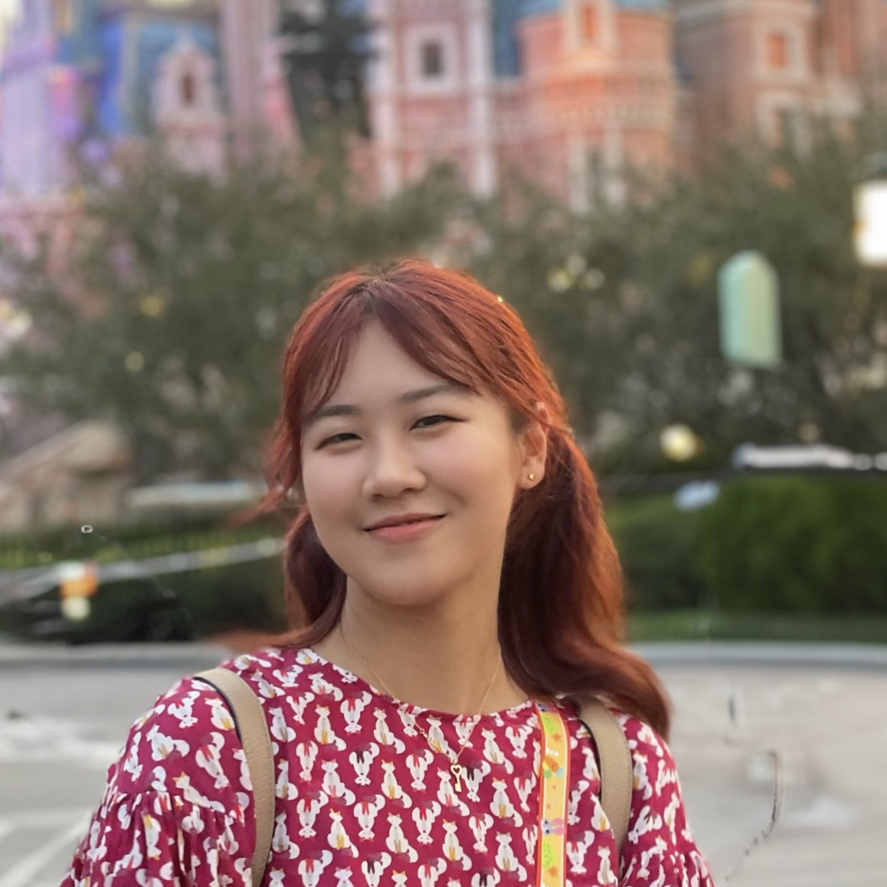

Deadline
August 29, 202611:59 PM AOE
NeurIPS 2026 Workshop
Interpretability for Discovery
What do AI models know that we don’t?
We explore how model interpretability can turn learned representations into novel, testable knowledge.
December 12 or 13, 2026
Atlanta, Georgia, USA
August 29, 2026 · AoE
About the
Workshop
AI models now match or exceed human experts across domains from protein structure prediction and clinical forecasting to astronomy, climate science, animal communication, and strategic games.
This workshop reframes interpretability as a tool for discovery, bringing interpretability researchers and domain scientists together to turn what models encode into knowledge experts can test and validate.
Key Dates
All deadlines follow Anywhere on Earth (AoE). Submission instructions and policies are available on the CFP page.
Notification
September 29, 2026On or before this date
In person
December 12 or 13, 2026Final date to be confirmed · Atlanta, Georgia, USA
Invited Speakers
Speaker lineup
To be announced soon
Invited speakers will be published once all details are confirmed.
December 12 or 13 · Atlanta
Workshop Timetable
Tentative schedule. The final date, speaker assignments, and talk titles will be added when confirmed.
Welcome and opening remarks
Workshop organizers
Invited talk 1
Title forthcoming
Invited talk 2
Title forthcoming
Coffee
Intermission
Spotlight talks
Selected authors
Panel discussion
Interpretability for scientific discovery
Invited talk 3
Title forthcoming
Lunch
Intermission
Poster session
Accepted papers
Invited talk 4
Title forthcoming
Coffee
Intermission
Invited talk 5
Title forthcoming
Invited talk 6
Title forthcoming
Closing remarks
Workshop organizers
More information
Explore the workshop
01 · About
Premise and research scope
Why interpretability can be a method for producing new knowledge.
Read more → 02 · CFPSubmission instructions
Dates, paper format, review policy, presentation details, and responsible use.
Read more → 03 · ScheduleFull-day program
The complete timetable and program notes in a focused view.
Read more →Organizers

Xiaoyan Bai
University of Chicago

Yonatan Belinkov
Technion

Ekdeep Singh Lubana
Goodfire AI

Yaniv Nikankin
Technion

Chenhao Tan
University of Chicago
Amirtha Varshini A S
Montai Therapeutics
With support from
Sponsorship
We gratefully acknowledge the support of our sponsor.
 Goodfire
Goodfire